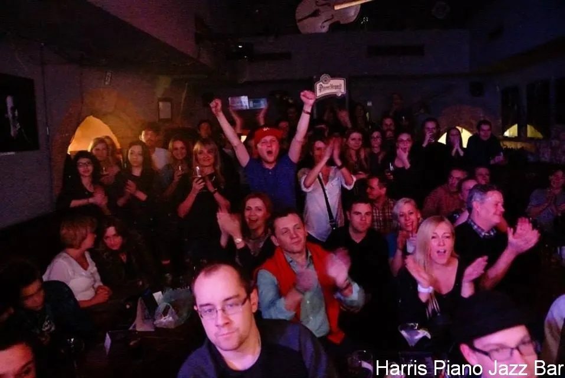

Klub jazzowy w Krakowie
Klub jazzowy w Krakowie
Codziennie muzyka na żywo!
Jazz Blues Funk Soul Hip-Hop
- Poniedziałek – Piątek
- 13:00 – do ostatniego gościa
- Sobota i niedziela
- 12:00 – do ostatniego gościa
Program · Rynek Główny 28, Kraków
Koncerty na żywo
Koncerty zaczynamy zwykle o 21:30. Przyjdź wcześniej – najlepsze miejsca znikają szybko.
O nas · od stycznia 1997
Klub jazzowy w sercu Krakowa
Drugi w Europie i jedyny taki w Polsce klub, w którym codziennie odbywają się koncerty autorskiej muzyki jazzowej.
Marzenie o miejscu z doskonałą muzyką, świetną obsługą, przyjaznymi, niezwykłymi ludźmi i klimatycznym wnętrzem – Harris łączy to wszystko z naturalną lekkością. Rynek Główny 28, w samym sercu Starego Miasta, na stałe wpisał się w klubowy kalendarz Krakowa.
Gramy szeroko rozumiany jazz – od klasyki, przez wszelkie mieszanki, po progres. Nie zamykamy się na muzykę inną, poszukującą, ale zawsze dobrą. Do tego dobry drink, aromatyczne piwo albo coś mocniejszego.
U nas goście są blisko muzyków – a podczas jam sessions często sami wchodzą na scenę. Jazz, fusion, latin, funk i soul: przynieś instrument albo po prostu słuchaj.

- Rok otwarcia
- 1997 rok otwarcia klubu
- Koncerty w tygodniu
- 7/7 dni w tygodniu z muzyką na żywo
- Koncerty w kalendarzu
- 4000+ koncertów w naszym kalendarzu online
- Start koncertów
- 21:30 o tej godzinie zwykle zaczyna się koncert
Na naszej scenie
Grali u nas
- Art Farmer
- Michał Urbaniak
- Gary Bartz
- Jarosław Śmietana
- Mike Stern
- Tomasz Szukalski
- Fred Wesley
- Jan Ptaszyn Wróblewski
- Idris Muhammad
- Krzysztof Ścierański
- Adam Bałdych
- Karen Edwards
- Jorgos Skolias
- Piotr Schmidt
- Marek Bałata
- Roberto Flaming
- Andy McKee
…i setki muzyków, którzy swoim talentem i energią sprawili, że Harris jest miejscem niezwykłym.
Galeria
Wieczory, których się nie powtarza
1 / 16
Przesuń w bok, aby zobaczyć więcej zdjęć.
Zanim przyjdziesz
Pytania o koncerty i rezerwacje
Czy trzeba rezerwować stolik?
Warto – liczba miejsc jest ograniczona, zwłaszcza podczas specjalnych koncertów. Rezerwacje mailowe i telefoniczne (12 421 57 41) przyjmujemy do godziny 20:00.
O której zaczynają się koncerty?
Koncerty zaczynamy zwykle o 21:30. Dokładną godzinę każdego wieczoru podajemy w programie koncertów na tej stronie.
Ile kosztuje wstęp na koncert?
Cena zależy od koncertu i jest podana przy każdym wydarzeniu w programie. Wstęp na jam sessions kosztuje zwykle 10 zł, na koncerty zespołów najczęściej od 25 do 45 zł.
W jakich godzinach jest otwarty klub?
Od poniedziałku do piątku od 13:00, w soboty i niedziele od 12:00 – zawsze do ostatniego gościa.
Czy mogę zagrać na jam session?
Tak – podczas jam sessions goście często sami wchodzą na scenę. Gramy jazz, fusion, latin, funk i soul, więc przynieś instrument.
Czy w Harrisie można coś zjeść?
Tak. W karcie są m.in. przystawki i sałatki, panini, pizza, makarony i desery, a w barze klasyczne koktajle, piwo z beczki i karta win.
Gdzie dokładnie jest klub?
Na Rynku Głównym 28 w Krakowie, w samym sercu Starego Miasta.
Telefonicznie lub mailowo
Rezerwacja stolika
12 421 57 41- Rezerwacje – mailowe i telefoniczne – przyjmujemy do godziny 20:00.
- Prosimy o niedokonywanie podwójnych rezerwacji (online i telefonicznie).
- Liczba miejsc jest ograniczona – na specjalne koncerty warto pisać z wyprzedzeniem.
- E-mail rezerwacji: rezerwujestolik@gmail.com
Stare Miasto, Kraków
Znajdź nas
Harris Piano Jazz Bar Rynek Główny 2831-010 Kraków
- Poniedziałek – Piątek
- 13:00 – do ostatniego gościa
- Sobota i niedziela
- 12:00 – do ostatniego gościa
Rynek Główny 28, 31-010 Kraków – w samym sercu Starego Miasta.
Mapa wczytuje się z serwerów Google dopiero po kliknięciu.